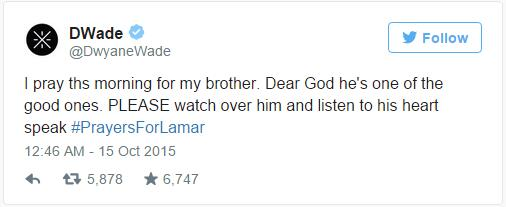

Former team-mate Kobe Bryant and ex-wife Khloe Kardashian are among those who have visited hospitalised former NBA standout Lamar Odom as he fights for his life.
Odom was found unconscious at a brothel in Nevada and taken to Sunrise Hospital and Medical Center by medics.
Police received a 911 emergency call from panicked staff at the brothel, saying that a man, identified as Odom, was unconscious, with blood and a white substance coming from his nose and mouth, Nye County Sheriff Sharon Werley told reporters on Thursday morning (AEDT).
People at the brothel said Odom had been using cocaine and that he had taken as many as 10 tabs of a herbal sexual enhancement supplement.
The brothel's owner, Dennis Hof, said that, during his three-day stay, Odom had been taking large amounts of "herbal Viagra," a nonprescription product which can dramatically lower blood pressure and interact with other medications.
Odom publicist Eve Sarkisyan said in a statement that "family and friends are extremely concerned for Lamar" but warned against "false information being circulated unofficially."
Bryant left during the Los Angeles Lakers' 107-100 preseason exhibition loss to Sacramento in Las Vegas to be with Odom while other reports said Kardashian and Lakers general manager Mitch Kupchak visited Odom in the hospital.
Odom, 35, and Bryant, 37, were Lakers team-mates from 2004 through 2011, helping Los Angeles capture NBA titles together in 2009 and 2010. Odom had not played in the NBA since 2013.
Lakers coach Byron Scott wished Odom his best.
"Obviously, our hearts and our thoughts and our prayers are with Lamar and his family," Scott said.
"It's obviously something that you don't want to hear before the game because I think the people that knew about it, we were all thinking about it.
"I obviously feel for him and hope that he will be OK."
Odom's hospitalisation followed a downturn in a 14-season career with NBA teams, including the Lakers from 2004-2011.
On top of the pressures of the life of a top NBA player, Odom, whose mother died when he was 12, had to deal with being a reality TV star after marrying Kardashian.
The 6-foot, 10-inch-tall (2-metre) athlete has long been reported to have had issues with cocaine abuse, although this has never been publicly confirmed. He has admitted only to using marijuana.
During the 2000-2001 season, Odom was suspended for violating the NBA's anti-drug policy. In 2013, he pleaded no contest in Los Angeles to a charge of driving under the influence and was ordered to undergo rehabilitation for three months for alcohol abuse.
Currently a free agent, he last played for the Los Angeles Clippers during the 2012-13 season and is no longer attached to any team.
Love Ranch owner Hof said Odom had arrived on Saturday.
"He was polite and reserved, and he told multiple employees that he was there to get some privacy and spend some time relaxing," Hof said. While prostitution is illegal in most of the United States, brothels are legal in some parts of Nevada.
Hof said staff reported that Odom had been taking "herbal Viagra" capsules but that no illicit drugs were found in his room. Brothel employees found Odom unconscious on Tuesday (Wednesday AEDT) and called police after he started vomiting, Hof said.